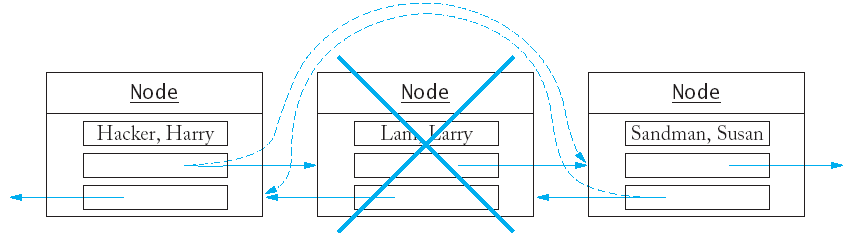
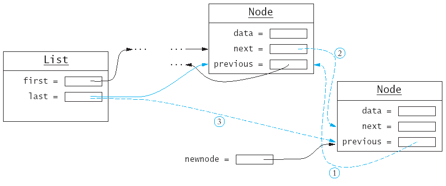
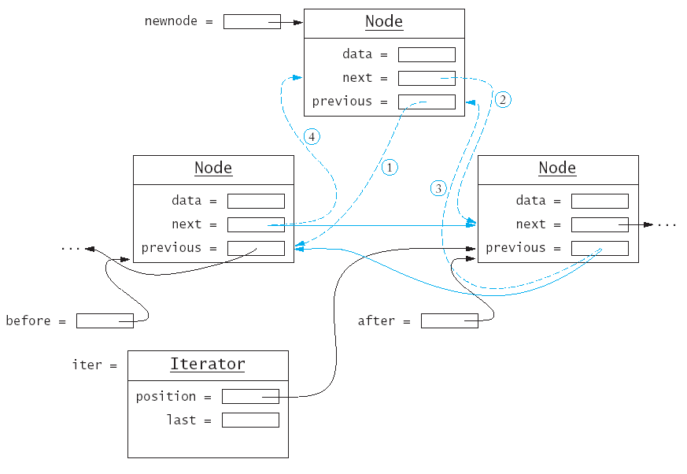

Chapter 16: An Introduction to Data Structures
Chapter Goals
- To be able to write programs with standard lists
and iterators
- To understand the advantages and disadvantages of
the list data structure
- To be able to implement linked lists
- To learn about stacks and queues
- To become familiar with common containers and
algorithms from the Standard Template Library
Linked Lists
-
Suppose you are maintaining a vector of sorted
objects (such as employees)
- Many elements will need to be shifted back if
an new object is inserted in the middle.
- Many elements will need to be shifted forward
if an object is deleted from the middle.
- Moving a large number of records can involve a
substantial amount of computer time.
- Rather than store a sequence of values in one
long block of memory (like a vector or an array) a linked list stores
each value in its own memory block, together with the locations of the
neighboring blocks in the sequence.

- Inserting an element into a list now requires no
shifting, merely reassigning new locations to adjacent objects.

- Removing an element from the list doesn't require
shifts either.

-
The standard C++ library has an implementation of
the linked list structure.
-
First we will learn how to use the standard
list.
- Later we will find out how to implement lists.
- Doubly linked lists (as shown in the
illustrations) have links going in both directions.
-
Singly linked lists only link elements in one
direction.
- Just like the vector, the standard list is a
template.
- You can use push_back to add elements
to the list.
list<string> staff;
staff.push_back("Cracker, Carl");
staff.push_back("Hacker, Harry");
staff.push_back("Lam, Larry");
staff.push_back("Sandman, Susan");
- You cannot
directly access elements using
subscript access (e.g. staff[3]) - the values are not stored
in one contiguous block in memory and there is no fast way to access
them.
-
Instead you must start at the beginning of the
list, and visit each element in turn using a list iterator.
An iterator marks a position
in the list.
list<string>::iterator pos;
pos = staff.begin();
- To move an iterator forward in the list, use the ++
operator.
pos++;
- To move an iterator backward in the list, use the
-- operator.
pos--;
- You can find the value that is stored in the
position with the * operator.
string value = *pos;
- The value *pos represent the value that
is stored in the list.
*pos = "Van Dyck, Vicki";
- To insert another string before the iterator
position, use the insert function.
staff.insert(pos, "Reindeer, Rudolph");
- Each list has an end position that does not
correspond to any value in the list but that points past the list's
end.
pos = staff.end(); /* points past the end of the list */
staff.insert(pos, "Yaglov, Yvonne");
/* insert past the end of list */
- The end position does not point to any value, so
you cannot look up the value at that position.
string value = *(staff.end()); /* ERROR */
- Compare to accessing s[10] in a vector
with 10 elements.
- The end position is useful for stopping a
traversal of the list.
pos = staff.begin();
while (pos != staff.end())
{ cout << *pos << "\n";
pos++;
}
- The traversal can be described more concisely
with a for loop:
for (pos = staff.begin(); pos != staff.end(); pos++)
cout << *pos << "\n";
- Compare this to a traversal of a vector.
for (i = 0; i < s.size(); i++)
cout << s[i] << "\n";
- To remove an element from a list, you move an
iterator to the position you want to remove, then call the erase
function.
pos = staff.begin();
pos++;
staff.erase(pos);
Linked Lists(list1.cpp)
Implementing Linked Lists (The Classes for Lists, Nodes, and
Iterators)
- We will start with a linked list of strings.
- A linked list stores each value in a separate
object called a node.
class Node {
public:
Node(string s);
private:
string data;
Node* previous;
Node* next;
friend class List;
friend class Iterator;
};
- The friend declarations indicate the List
and Iterator member functions are allowed to inspect and
modify the data members of the Node class.
- A class should not grant friendship to another
class lightly, because it breaks the privacy protection.
- The list object holds the locations of the first
and last nodes in the list.
class List {
public:
List();
void push_back(string s);
void insert(Iterator pos, string s);
Iterator erase(Iterator pos);
Iterator begin();
Iterator end();
private:
Node* first;
Node* last;
};
- When the list is empty the first and last
pointers are NULL.
- A list object stores no data; it just knows where
to find the node objects that store the list contents.
-
An iterator denotes a position in the list.
class Iterator {
public:
Iterator();
string get() const; /* use instead of * */
void next(); /* use instead of ++ */
void previous(); /* use instead of -- */
bool equals(Iterator b) const; /* use instead of == */
private:
Node* position;
Node* last;
friend class List;
};
- We will enable the operators ++, --,
* and == in the next chapter.
- If the iterator points past the end of the list,
then the position pointer is NULL.
- The iterator stores a pointer to the last element
of the list, so that the previous method can move the iterator back
from the past-the-end position to the last element of the list.
Implementing Linked Lists (Implementing Iterators)
- Iterators are created by the begin and end
functions of the List class.
Iterator List::begin() {
Iterator iter;
iter.position = first;
iter.last = last;
return iter;
}
Iterator List::end() {
Iterator iter;
iter.position = NULL;
iter.last = last;
return iter;
}
- The next function advances the iterator to the
next position.

- Note that it is illegal to advance the iterator
once it is in the past-the-end position.
void Iterator::next()
{ assert(position != NULL)
position = position->next;
}
- The previous function is similar.
- When the iterator points to the first element in
the list, it is illegal to move it further backward.
void Iterator::previous()
{ if (position == NULL) position = last;
else position = position->previous;
assert(position != NULL);
}
- The get function simply returns the data value of
the node to which position points.
string Iterator::get() const
{ assert(position != NULL);
return position->data;
}
- The equals function compares two position
pointers.
bool Iterator::equals(Iterator b) const
{ return position == b.position; }
Implementing Linked Lists (Implementing Insertion and Removal)
- For the push_back function, we must
first make a new node.
Node* newnode = new Node(s);
- The node must point back to the old end of the
list, while the old end must point to it.
newnode->previous = last; // (1)
last->next = newnode; // (2)
last = newnode; // (3) !
- There is a special case when last is NULL
(the list is empty).
if (last == NULL)
{ first = newnode;
last = newnode;
}

- To insert an element in the middle of the list
requires manipulating both elements on either side of the new node.

- There is a special case when the list is empty.
if (iter.position == NULL)
{ push_back(s);
return;
}
- Otherwise we create pointers to track the
surrounding nodes.
Node* after = iter.position;
Node* before = after->previous;
- We tell the new node where it belongs in the
list.
newnode->previous = before; // (1)
newnode->next = after; // (2)
- Then update the surrounding nodes.
after->previous = newnode; // (3)
if (before == NULL) /* insert at beginning */
first = newnode;
else
before->next = newnode; // (4)
- When know that after is not NULL,
but before could be.
- As with insertion, we will need to work with both
the element before and after the one to be removed.

Of course we cannot remove a node that is not there.
assert(iter.position != NULL)
We create pointers to track all three nodes we need
to work with.
Node* remove = iter.position;
Node* before = remove->previous;
Node* after = remove->next;
We disconnect the node to be removed from the one
before it; note the special case when we delete from the front of the
list.
if (remove == first) first = after;
else before->next = after;
We repeat the process with the node after the one to
delete.
if (remove == last) last = before;
else after->previous = before;
Finally we delete the node.
delete remove;
Implementing Linked Lists (list2.cpp)
Stacks and Queues
- Stacks and queues are special data types that
allow insertion and remove of items at the ends only, not in the
middle.
- A stack lets you insert and remove
elements at one end only,
traditionally called the top of the
stack.
- To visualize a stack, think of a stack of books.
- Since items can only be added or removed from the
top of the stack, they are removed in the order that is opposite from
the order they were added.
- This is called last in, first out or
LIFO order.
- The addition and removal operations are called push
and pop.
- The is a stack template in the standard
C++ library.
stack<string> s;
s.push("Tom");
s.push("Dick");
s.push("Harry");
while (s.size() > 0)
{ cout << s.top() << "\n";
s.pop();
}
- A queue is similar to a stack, except that you
add items to one end of the
queue (the back) and remove them
from the other end of the
queue (the front).
- To visualize a queue, think of people lining up.
- Queues store items in a first in,
first out or FIFO fashion.
- The standard queue template implements a queue in
C++.
queue<string> q;
q.push("Tom");
q.push("Dick");
q.push("Harry");
while (q.size() > 0)
{ cout << q.front() << "\n";
q.pop();
}
Stacks and Queues (fifolifo.cpp)
Other Standard Containers
- The standard library contains several other
useful containers.
- The set always keeps its elements in
order, no matter in which order you insert them.
set<string> s;
s.insert("Tom");
s.insert("Dick");
s.insert("Harry");
set<string>::iterator p;
for (p = s.begin(); p!= s.end(); p++)
cout << *p << "\n";
- The above code displays the strings in sorted
order: Dick, Harry, Tom.
- The set data structure keeps the values
in a special tree shaped structure; each time an element is inserted,
the tree is reorganized.
- The C++ set ignore duplicates; if you
insert an element into the set that is already present, the insertion
has no effect.
- The count function returns the number
of times that an element is contained in a set (should always be 1).
set<string> s;
s.insert("Tom");
s.insert("Tom");
cout << s.count("Tom") << "\n"; /* displays 1 */
- If you want to be able to keep track of multiple
occurrences of identical values, use a multiset instead.
- The count function works for multiset,
with expected results.
multiset<string> m;
m.insert("Tom");
m.insert("Tom");
cout << m.count("Tom") << "\n"; /* displays 2 */
- A map is similar to a vector,
but you can use another data type for the indices.
map<string, double> scores;
scores["Tom"] = 90;
scores["Dick"] = 86;
scores["Harry"] = 100;
Standard Algorithms
- Why iterators?
- It is possible to supply generic functions
that can carry out a task with the elements in any container that uses
iterators.
- Example: The accumulate function can compute the
sum of all elements in a vector or a list.
vector<double> data;
/* do something with data */
double vsum = 0;
accumulate(data.begin(), data.end(), vsum);
/* now vsum contains the sum of the elements in the vector */
list<double> salaries;
/* do something with salaries */
double lsum = 0;
accumulate(salaries.begin(), salaries.end(), lsum);
/* now lsum contains the sum of the elements in the list */
- The standard library also supplies a find
algorithm.
- The find algorithm returns the second iterator
(from the parameter list) if
the search fails.
/* search for a certain name on the staff */
list<string>::iterator it =
find(staff.begin(), staff.end(), name);
- The first two parameters can be other iterators
for the list (if you don't want to search the entire list).
-
The standard library provides a wealth of
ready-to-use and fully debugged data structures and algorithms.
- for_each applies a function to each
element
- find (as above)
- find_if locates the first element
fulfilling a condition
- count (as above)
- equal tests if containers have the
same elements in the same order
- replace/replace_if replace
all matching elements with a new one
- unique remove adjacent identical
values
- min_element, max_element
finds the smallest and largest elements
- next_permutation rearranges the
elements; call it n! times iterates through all permutations
- sort sorts the elements; stable_sort
performs better if the container is already almost sorted
- random_shuffle randomly rearranges
the elements
- nth_element find the nth
element without sorting the container.
- plus many more...
- Before writing a lot of code from scratch, check
whether the standard library already has what you need.